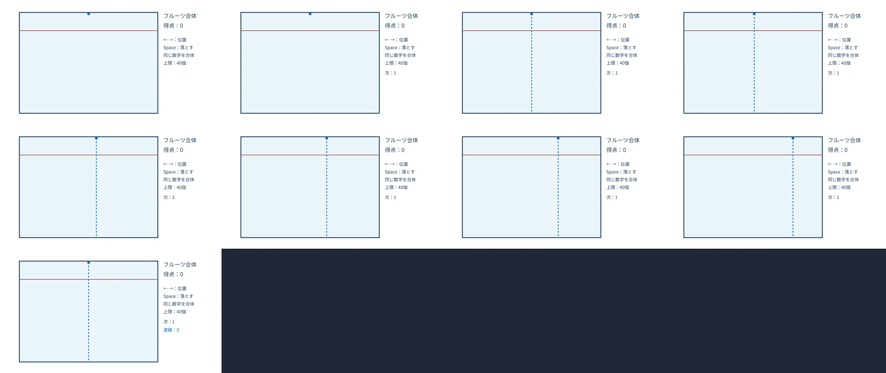

フルーツ合体パズルの発展
丸いフルーツを落とし、同じ数字を合体させます。
始める前に
ZIPを展開してできたフォルダーでindex.htmlを開きます。基本編の完成版から始めます。ZIPには基本編の3ファイルが入っています。
WindowsでZIPを展開する（動画）
作業用フォルダーのscript.jsを編集します。各ステップで保存し、index.htmlを再読み込みしてください。
クラスはデータと処理の設計図です。constructorはnewで作るときに呼ばれ、thisは作られた一つ一つのインスタンスを指します。
ステップ 1：次のフルーツを表示する
このステップの見本を図で見る
floor(0.2×2)=0; 0+1=1
次は数字1
floor(0.7×2)=1; 1+1=2
次は数字2
ゲーム画面とコードの前後を見る

このステップの見本
この行を足す前 変わったコードの一例（script.js）
ctx.fillText("次：" + (this.nextLevel + 1), 590, 270);
見本で確かめること
右側に次の数字が表示されます。
目標
次に落ちる数字を表示します。
書く場所と置き換えるコード
次の果物を表示する
Game.draw() の合体の説明を描く行の下に追加します。
目印
ctx.fillText("同じ数字を合体", 590, 206); ctx.fillText("上限：40個", 590, 234);追加するコード
ctx.fillText("次：" + (this.nextLevel + 1), 590, 270);nextLevel は次に作る果物の配列番号です。番号0を画面の数字1として見せるため1を足します。落とした後に0か1を選ぶので、次は数字1か2です。
保存して再読み込みし、「次」の数字が表示されることを確かめます。
保存後の確認
保存してゲーム画面を更新する（動画）
index.html を再読み込みします。右側に次の数字が表示されます。 この段階の見本を開く
小さな練習
nextLevelが0なら画面には何と表示しますか。
練習の答え
1です。
ステップ 2：落下位置の線を出す
このステップの見本を図で見る
このステップの見本
見本で確かめること
左右キーで動かすと点線も横に動きます。
目標
落とす位置に点線を表示します。
書く場所と置き換えるコード
落下位置に点線を描く
Game.draw() の青い印を描く行の下に追加します。
目印
ctx.fillStyle = "#146bb5"; ctx.beginPath(); ctx.arc(this.aim, 50, 5, 0, Math.PI * 2); ctx.fill();追加するコード
ctx.strokeStyle = "#146bb5"; ctx.setLineDash([6, 6]); ctx.beginPath(); ctx.moveTo(this.aim, 50); ctx.lineTo(this.aim, floorY); ctx.stroke(); ctx.setLineDash([]);aim は落とす横位置です。始点と終点に同じ横座標を使い、床まで縦に描きます。setLineDash([6, 6]) は6ずつ線と空白を繰り返し、描いた後の空配列で点線の設定を戻します。
保存して再読み込みし、落下位置の印から床まで点線が表示されることを確かめます。
保存後の確認
左右キーで動かすと点線も横に動きます。 この段階の見本を開く
小さな練習
aimが320なら点線はどのx座標ですか。
練習の答え
x=320です。
ステップ 3：続けて合体した得点を増やす
このステップの見本を図で見る
2 × 10 × 1 = 20
連鎖の猶予を90フレームにする
2 × 10 × 2 = 40
連鎖が2になる
comboFrames=0 → combo=1
連鎖を1からやり直す
ゲーム画面とコードの前後を見る
このステップの見本
this.score = 0; this.state = "playing"; this.dangerFrames = 0;
変わったコードの一例（script.js）this.score = 0; this.state = "playing"; this.dangerFrames = 0; this.combo = 0; this.comboFrames = 0;
見本で確かめること
続けて合体すると右側の連鎖数と得点が増えます。
目標
短い間に続く合体を連鎖として数えます。
書く場所と置き換えるコード
連鎖の値を用意する
Game の constructor() の次の行を置き換えます。
置き換える範囲
this.score = 0; this.state = "playing"; this.dangerFrames = 0;置き換えるコード
this.score = 0; this.state = "playing"; this.dangerFrames = 0; this.combo = 0; this.comboFrames = 0;combo は連鎖の倍率、comboFrames は連鎖を続けられる残りの更新回数です。新しいゲームでは両方0です。
連鎖の残りを減らす
Game.update() で待ち時間を減らす次の行の下に追加します。
目印
if (this.cooldown > 0) this.cooldown--;追加するコード
if (this.comboFrames > 0) this.comboFrames--; else this.combo = 0;残りがあれば1減らし、残りがない更新では連鎖を0に戻します。
続けて合体すると倍率を上げる
Game.resolvePairs() で得点を加える次の行を置き換えます。
置き換える範囲
this.score += (merged.level + 1) * 10;置き換えるコード
this.combo = this.comboFrames > 0 ? Math.min(10, this.combo + 1) : 1; this.comboFrames = 90;
this.score += (merged.level + 1) * 10 * this.combo;残りがあれば combo を1増やし、なければ1から始めます。Math.min(10, ...) で倍率は10までです。残りを90更新に戻し、通常の合体点に倍率を掛けます。
連鎖を表示する
Game.draw() の点線を描く次の行の下に追加します。
目印
ctx.strokeStyle = "#146bb5"; ctx.setLineDash([6, 6]); ctx.beginPath(); ctx.moveTo(this.aim, 50); ctx.lineTo(this.aim, floorY); ctx.stroke(); ctx.setLineDash([]);追加するコード
ctx.fillText("連鎖：" + this.combo, 590, 300);combo を文字につなぎ、現在の連鎖を表示します。
保存して再読み込みし、短い間に続けて合体すると連鎖と得点が増え、時間が過ぎると連鎖が戻ることを確かめます。
保存後の確認
続けて合体すると右側の連鎖数と得点が増えます。 この段階の見本を開く
小さな練習
基本20点の合体で連鎖が2なら何点ですか。
練習の答え
20 × 2で40点です。